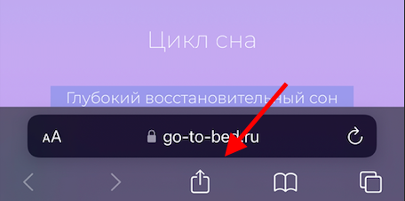
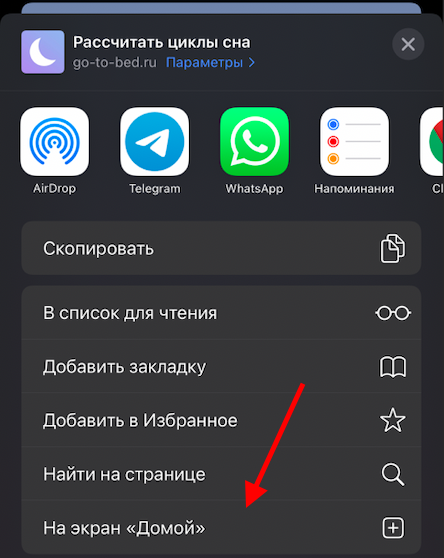
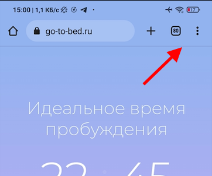
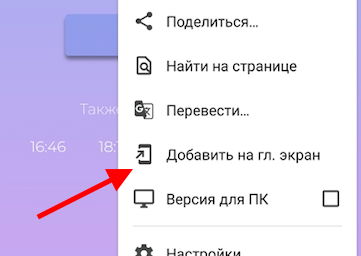
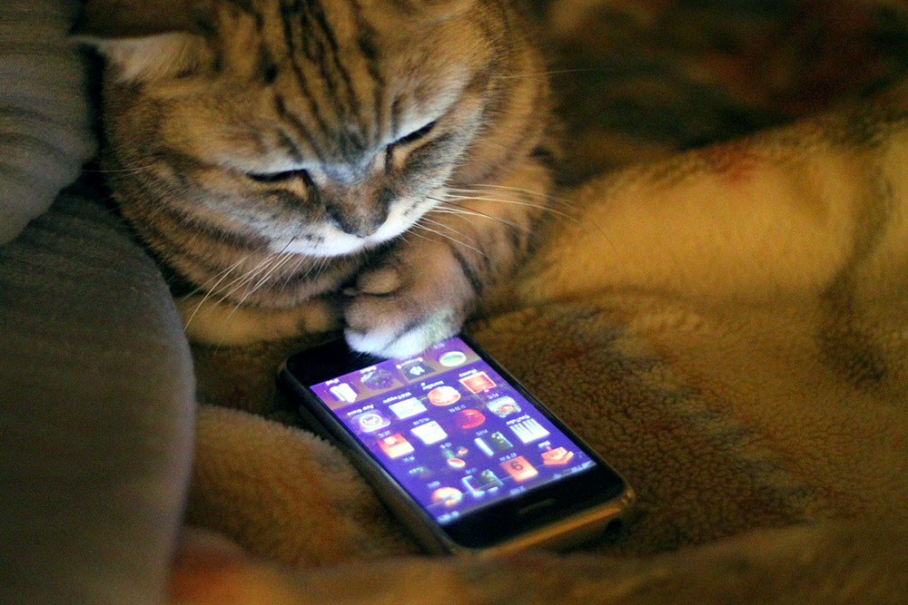

Для успешного дня важно выспаться ночью. 5 простых правил сделают ваш сон лучше.
Экраны и контент
Минимум за час до сна важно оторваться от супер увлекательной ленты Instagram. На это минимум 2
причины:
Экран излучает свет синего спектра, который передает нашему мозгу, что день в самом разгаре
и спать нам еще не скоро. Да, на многих устройствах есть режим Night Shift, убирающий синий
спектр, но...
Бесконечные мелькающие картинки и видео пробуждают мозг, не дают успокоится. Еще бы, так
много информации. А потом сознание не может прийти в равновесие и голоса внутри головы не
дают уснуть.
Хорошо, экраны убрали, но чем теперь заняться? Идеальным вариантом будет чтение приятной легкой
книги. Тоже информация, но внимание концентрируется на одной странице и это успокаивает.
Проветривание
Перед сном проверите комнату минут 30. Свежий воздух полезен для сна.
Температура тела ночью понижается. Поэтому, если есть возможность, установите температуру
комфортной прохлады. Многие спят лучше именно в прохладе, а чтобы не заболеть можете надеть
теплые носки.
Для охлаждения перед сном можно принимать прохладный душ, а утром наоборот горячий для
пробуждения.
Еда и сон
Рекомендуется ужинать за 5-6 часов до сна, чтобы организм не был занят перевариванием пищи ночью.
Кстати, сны на пустой желудок яснее, содержательнее и интереснее.
И да, чем легче ужин, тем лучше.
Спальня только для сна
Наш мозг любит зонировать пространство вокруг. Здесь я ем, здесь смотрю очень важные видео на
YouTube, а здесь сплю. Поэтому важно на кровати только спать. Нужно приучить мозг - ложимся
здесь, значит, время баю-бай.
Время только для сна
Организм быстро привыкает к определенному графику. Соблюдайте его и у вас не будет проблем с
засыпанием, а утром автоматически проснетесь за 5 минут до будильника. Последнее - очень
приятный бонус.
Если днем захочется спать, поспите ровно 20 минут. Ровно 20 - это важно. Так мы немного
подзярядим нашу внутреннуюю батарейку, но не успеем провалиться в глубокий сон и сбить режим.
Правила просты, пользы на миллион.
Рассчитай свой сон оффлайн
Вы оторвались от цивилизации, улетели на марс или просто решили отдохнуть и отключили интернет.
GoToBed расчитает ваш сон даже оффлайн. Пару кликов и приложение всегда под рукой на вашем
смартфоне.
Установка на iOS
Нажмите поделиться в Safari

Выберите пункт "Добавить на экран Домой"

Нажимите "Добавить"
На ваш экран будет добавлена иконка. Теперь вы можете рассчитать свой сон без интернета.
Инструкция для Android
В Google Chrome открываем меню

Выбираем "Добавить на главный экран"

Нажимаем "Добавить"
На экран рабочего стола добавлена иконка и приложение доступно оффлайн.

Как пользоваться приложением
Пока мы сладко спим внутри происходят важные процессы для восстановления организма и обработки
полученной днем информации. Зачем считать эти циклы и как это приложение нам может помочь?
Циклы сна
Если кратко, то сон делится на 2 фазы:
Фаза медленного или глубокого сна;
Фаза быстрого сна.
После засыпания медленная фаза длится намного дольше быстрого, но ближе к пробуждению
сокращается, а фазы быстрого сна становятся длиннее с каждым циклом. Это можно увидеть на
графике, что на главной странице сайта.
Если человека разбудить во время медленного сна, вероятно, он будет чувствовать себя разбитыми и
сонным. Если же попасть в фазу быстрого сна, то проснуться будет намного легче.
Отлично помните сон, который видели только что? Значит вы проснулись в
быстрой фазе сна. Именно в ней мы видим сновидения.
Так работает организм. Можно спать больше, но чувствовать себя разбитым, если проснуться в
медленную фазу. Или встать немного раньше, чтобы пробудиться в быстрой фазе и быть огурчиком.
Как пользоваться приложением?
Допустим, вы ложитесь в 23:00, плюс 15 минут на засыпание. Нажмите "Настроить" и введите эти
цифры.
Приложение покажет, что идеальное время для пробуждения - 6:45. Даже если вам нужно проснуться в
7:30, чтобы успеть на работу, попробуйте просыпаться в 6:45 неделю. Встать будет проще, а днем
будете на заряженной ноте.
Не забудьте указать примерное время на засыпание. По умолчанию стоит 15 минут - это
среднее значение для большинства.
Постарайтесь каждый день спать в одни часы. Через какое-то время ваш организм запомнит этот
график и будет легко засыпать вечером, а утром плавно просыпаться даже без будильника.
Надеюсь, это приложение поможет вам лучше спать и начинать новый день с правильной ноги (точнее с
правильной фазы сна). Будьте здоровы!
Сказать спасибо
Этот проект создан, чтобы помогать вам просыпаться каждое утро с отличным настроением. Проект
полностью бесплатный, но вы можете помочь проекту взаимно.
Идеи и ошибки
Вы можете написать мне на почту о своей идее или
обнаруженом баге. Это поможет проекту и всем остальным пользователям.
Расскажите друзьям
Если приложение помогло вам, то будет полезно и другим.